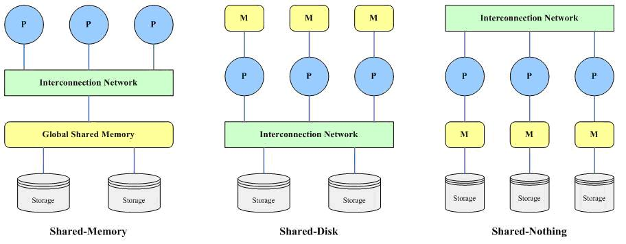

转载自:http://www.cnblogs.com/hustcat/archive/2009/12/24/1631674.html
1、并行数据库
1.1、并行数据库的体系结构
并行机的出现，催生了并行数据库的出现，不对，应该是关系运算本来就是高度可并行的。对数据库系统性能的度量主要有两种方式：(1)吞吐量(Throughput)，在给定的时间段里所能完成的任务数量；(2)响应时间(Response time)，单个任务从提交到完成所需要的时间。对于处理大量小事务的系统，通过并行地处理许多事务可以提高它的吞吐量。对于处理大事务的系统，通过并行的执行事务的子任务，可以缩短系统晌应时间。
并行机有三种基本的体系结构，相应的，并行数据库的体系结构也可以大概分为三类：
- 共享内存(share memeory)：所有处理器共享一个公共的存储器；
- 共享磁盘(share disk)：所有处理器共享公共的磁盘；这种结构有时又叫做集群(cluster)；
- 无共享(share nothing)：所有处理器既不共享内存，也不共享磁盘。
如图所示：

1.1.1、共享内存
该结构包括多个处理器、一个全局共享的内存（主存储器）和多个磁盘存储，各个处理器通过高速通讯网络（Interconnection Network）与共享内存连接，并均可直接访问系统中的一个、多个或全部的磁盘存储，在系统中，所有的内存和磁盘存储均由多个处理器共享。
这种结构的优点在于，处理器之间的通信效率极高，访问内存的速度要比消息通信机制要快很多。这种结构的缺点在于，处理器的规模不能超过32个或者64个，因为总线或互边网络是由所有的处理器共享，它会变成瓶颈。当处理器数量到达某一个点时，再增加处理器已经没有什么好处。
共享内存结构通常在每个处理器上有很大的高速缓存，从而减少对内存的访问。但是，这些高速缓存必须保持一致，也就是缓存一致性(cache-coherency)的问题。
1.1.2、共享磁盘
该结构由多个具有独立内存（主存储器）的处理器和多个磁盘存储构成，各个处理器相互之间没有任何直接的信息和数据的交换，多个处理器和磁盘存储由高速通信网络连接，每个处理器都可以读写全部的磁盘存储。
共享磁盘与共享内存结构相比，有以下一些优点：(1)每个处理器都有自己的存储器，存储总线不再是瓶颈；(2)以一种较经济的方式提供了容错性(fault tolerence)，如果一个处器发生故障，其它处理器可以代替工作。
该结构的主要问题不是在于可扩展性问题，虽然存储总线不是瓶颈，但是，与磁盘之间的连接又成了瓶颈。
运行Rdb的DEC集群是共享磁盘的体系结构的早期商用化产品之一(DEC后来被Compaq公司收购，再后来，Oracle又从Compaq手中取得Rdb，发展成现在的Oracle RAC)。
1.1.3、无共享
该结构由多个完全独立的处理节点构成，每个处理节点具有自己独立的处理器、独立的内存（主存储器）和独立的磁盘存储，多个处理节点在处理器级由高速通信网络连接，系统中的各个处理器使用自己的内存独立地处理自己的数据。
这 种结构中，每一个处理节点就是一个小型的数据库系统，多个节点一起构成整个的分布式的并行数据库系统。由于每个处理器使用自己的资源处理自己的数据，不存 在内存和磁盘的争用，提高的整体性能。另外这种结构具有优良的可扩展性——只需增加额外的处理节点，就可以以接近线性的比例增加系统的处理能力。
这种结构中，由于数据是各个处理器私有的，因此系统中数据的分布就需要特殊的处理，以尽量保证系统中各个节点的负载基本平衡，但在目前的数据库领域，这个数据分布问题已经有比较合理的解决方案。
由于数据是分布在各个处理节点上的，因此，使用这种结构的并行数据库系统，在扩展时不可避免地会导致数据在整个系统范围内的重分布（Re-Distribution）问题。
Shared-Nothing结构的典型代表是Teradata(并行数据库的先驱)，值得一提的是，MySQL NDB Cluster也使用了这种结构。
1.2、I/O并行(I/O Parallelism)
I/O并行的最简单形式是通过对关系划分，放置到多个磁盘上来缩减从磁盘读取关系的时间。并行数据库中数据划分最通用的形式是水平划分(horizontal portioning)，一个关系中的元组被划分到多个磁盘。
1.2.1、常用划分技术
假定将数据划分到n个磁盘D0，D1，…，Dn中。
- 轮转法(round-bin)。对关系顺序扫描，将第i个元组存储到标号为Di%n的磁盘上；该方式保证了元组在多个磁盘上均匀分布。
- 散列划分(hash partion)。选定一个值域为{0, 1, …,n-1}的散列函数，对关系中的元组基于划分属性进行散列。如果散列函数返回i，则将其存储到第i个磁盘。
- 范围划分(range partion)。
由于将关系存储到多个磁盘，读写时能同时进行，划分(partion)能大大提高系统的读写性能。数据的存取可以分为以下几类：
- 扫描整个关系；
- 点查询(point query)，如name = “hustcat”；
- 范围查询(range query)，如 20 < age < 30。
不同的划分技术，对这些存取类型的效率是不同的：
- 轮转法适合顺序扫描关系，对点查询和范围查询的处理较复杂。
- 散列划分特别适合点查询，速度最快。
- 范围划分对点查询、范围查询以及顺序扫描都支持较好，所以适用性很广。但是，这种方式存在一个问题——执行偏斜(execution skew)，也就是说某些范围的元组较多，使得大量的I/O出现在某几个磁盘。
1.3、查询间并行(interquery parallism)
查询间并行指的是不同的查询或事务间并行的执行。这种形式的并行可以提高事务的吞吐量，然而，单个事务并不能执行得更快(即响应时间不能减少)。查询间的并行主要用于扩展事务处理系统，在单位时间内能够处理更多的事务。
查询间并行是数据库系统最易实现的一种并行，在共享内存的并行系统(如SMP)中尤其这样。为单处理器设计的数据库系统可以不用修改，或者很少修改就能用到共享内存的体系结构。
在共享磁盘和无共享的体系结构中，实现查询间并行要更复杂一些。各个处理需要协调来进行封锁、日志操作等等，这就需要处理器之间的传递消息。并行数据库系统必须保证两个处理器不会同时更新同一数据。而且，处理器访问数据时，系统必须保证处理器缓存的数据是最新的数据，即缓存一致性问题。
1.4、查询内并行(intraquery parallism)
查询内并行是指单个查询要在多个处理器和磁盘上同时进行。为了理解，来考虑一个对某关系进行排序的查询。假设关系已经基于某个属性进行了范围划分，存储于多个磁盘上，并且划分是基于划分属性的。则排序操作可以如下进行：对每个分区并行的排序，然后将各个已经有序的分区合并到一起。
单个查询的执行可以有两种并行方式：
- 操作内并行(Intraoperation parallism)：通过并行的执行每一个运算，如排序、选择、连接等，来加快一个查询的处理速度。
- 操作间并行(Interoperation parallism)：通过并行的执行一个查询中的多个不同的运算，来加速度一个查询的处理速度。
注意两者间的区别，前者可以认为多个处理器同时执行一个运算，而后者是多个处理器同时执行不同的运算。
这两种形式之间的并行是互相补充的，并且可以同时存在于一个查询中。通常由于一个查询中的运算数目相对于元组数目是较小的，所以当并行度增加时，第一种方式取得的效果更显著。
2、MySQL的分区(partion)
2.1、MySQL分区概述
在MySQL中，InnoDB存储引擎长期支持表空间的概念，并且MySQL服务器甚至在分区引入之前，就能配置为存储不同的数据库使用不同的物理路径。分区(partion)更进一步，它允许你通过设置各种规则将一个表的各个分区跨文件系统存储。实际上，不同位置的不同表分区是作为一个单独的表来存储的。用户所选择的、实现数据分割的规则被称为分区函数(partioning function)，这在MySQL中它可以是模数，或者是简单的匹配一个连续的数值区间或数值列表，或者是一个内部HASH函数，或一个线性HASH函数。
最常见是的水平分区(horizontal partitioning)，也就是将表的不同的元组分配到不同的物理分区上。目前，MySQL 5.1还不支持垂直分区(vertical partitioning)，即将表的不同列分配到不同的物理分区。你可以使用MySQL支持的大多数存储引擎来创建表的分区，在MySQL 5.1中，同一个表的各个分区必须使用相同的存储引擎，比如，你不能对一个分区使用MyISAM，而对另一个分区使用InnoDB。但是，你可以对同一个数据库的不同的表使用不同的存储引擎。
要为某个分区表配置一个专门的存储引擎，必须且只能使用[STORAGE] ENGINE 选项，这如同为非分区表配置存储引擎一样。但是，必须记住[STORAGE] ENGINE（和其他的表选项）必须列在用在CREATE TABLE语句中的其他任何分区选项之前。下面的例子给出了怎样创建一个通过HASH分成6个分区、使用InnoDB存储引擎的表：
CREATE TABLE ti (id INT, amount DECIMAL(7,2), tr_date DATE)
ENGINE=INNODB
PARTITION BY HASH( MONTH(tr_date) )
PARTITIONS 6;注：分区必须对一个表的所有数据和索引；不能只对数据分区而不对索引分区，反之亦然，同时也不能只对表的一部分进行分区。
分区对数据库管理系统实现并行处理有着重要的影响，如果对数据进行分区，则很容易进行并行处理，但是，MySQL还没有充分利用分区的这种并行优势，而这也是它改进的方向 (这种分治思想深深的影响着并行计算，而且在并行计算方面具有天然优势)。MySQL的分区，会给系统带来以下一些优点：
- 与单个磁盘或文件系统分区相比，单个表可以存储更多的数据。
- 对于那些已经失去保存意义的数据，通常可以通过删除与那些数据有关的分区，很容易地删除那些数据。相反地，在某些情况下，添加新数据的过程又可以通过为那些新数据专门增加一个新的分区，来很方便地实现。
- 对于带Where的条件查询语句，可以得到更大的优化；只需要查询某些分区，而不用扫描全部分区。
还有其它一些优点，不过MySQL 5.1还不支持：
- 一些聚合函数，比如SUM() 和COUNT()，能够很容易的并行执行；
- 通过并行I/O，可以大大提高查询的吞吐量。
注：实际上，分区不论是对I/O并行，还是查询内并行，都有着重要的影响。只不过MySQL在这方面做得还不够多(不过，正在改进)，而Oracle对于查询内并行，做了很多工作。
2.2、分区类型
MySQL 5.1中可用的分区类型包括：
- RANGE分区(portioning)：根据列值所属的范围区间，将元组分配到各个分区。
- LIST分区：类似于按RANGE分区，区别在于LIST分区是基于列值匹配一个离散值集合中的某个值来进行选择。
- HASH分区：根据用户定义的函数的返回值来进行选择的分区，该表达式使用将要插入到表中的这些行的列值进行计算。这个函数可以包含MySQL 中有效的、产生非负整数值的任何表达式。
- KEY分区：类似于按HASH分区，区别在于KEY分区只支持计算一列或多列，且MySQL 服务器提供其自身的哈希函数。
2.2.1、范围分区
范围分区是通过计算表达式的值所属的范围区间，对元组进行分区。这些区间要求连续且不能相互重叠，使用VALUES LESS THAN操作符来进行定义。在下面的几个例子中，假定你创建了一个如下的一个表，该表保存有20家音像店的职员记录，这20家音像店的编号从1到20。
CREATE TABLE employees (
id INT NOT NULL,
fname VARCHAR(30),
lname VARCHAR(30),
hired DATE NOT NULL DEFAULT '1970-01-01',
separated DATE NOT NULL DEFAULT '9999-12-31',
job_code INT NOT NULL,
store_id INT NOT NULL
);你可以根据需要对该表进行各种分区，比如，你可以通过store_id来进行分区：
CREATE TABLE employees (
id INT NOT NULL,
fname VARCHAR(30),
lname VARCHAR(30),
hired DATE NOT NULL DEFAULT '1970-01-01',
separated DATE NOT NULL DEFAULT '9999-12-31',
job_code INT NOT NULL,
store_id INT NOT NULL
)
PARTITION BY RANGE (store_id) (
PARTITION p0 VALUES LESS THAN (6),
PARTITION p1 VALUES LESS THAN (11),
PARTITION p2 VALUES LESS THAN (16),
PARTITION p3 VALUES LESS THAN (21)
);很容易确定数据(72, 'Michael', 'Widenius', '1998-06-25', NULL, 13)被插入分区p2；但是，如果一条数据的store_id = 21，会怎么样呢？由于没有规则处理大于20的情况，所以服务器会报错。你可以通过如下方式来处理这种情况：
CREATE TABLE employees (
id INT NOT NULL,
fname VARCHAR(30),
lname VARCHAR(30),
hired DATE NOT NULL DEFAULT '1970-01-01',
separated DATE NOT NULL DEFAULT '9999-12-31',
job_code INT NOT NULL,
store_id INT NOT NULL
)
PARTITION BY RANGE (store_id) (
PARTITION p0 VALUES LESS THAN (6),
PARTITION p1 VALUES LESS THAN (11),
PARTITION p2 VALUES LESS THAN (16),
PARTITION p3 VALUES LESS THAN MAXVALUE
);MAXVALUE 表示最大的可能的整数值。现在，store_id 列值大于或等于16（定义了的最高值）的所有行都将保存在分区p3中。在将来的某个时候，当商店数已经增长到25, 30, 或更多 ，可以使用ALTER TABLE语句为商店21-25, 26-30,等等增加新的分区
RANGE分区在如下场合特别有用：
- 当需要删除“旧的”数据时。 在上面的例子中，你只需简单地使用 “ALTER TABLE employees DROP PARTITION p0；”来删除所有在1991年前就已经停止工作的雇员相对应的所有行。对于有大量行的表，这比运行一个如“DELETE FROM employees WHERE YEAR(separated) <= 1990；”这样的一个DELETE查询要有效得多。
- 经常依赖于分区属性进行查询。例如，当执行一个如“SELECT COUNT(*) FROM employees WHERE YEAR(separated) = 2000 GROUP BY store_id；”这样的查询时，MySQL可以很迅速地确定只有分区p2需要扫描，这是因为余下的分区不可能包含有符合该WHERE子句的任何记录。注：这种优化还没有在MySQL 5.1源程序中启用，但是，有关工作正在进行中。
范围分区的缺点就是容易出现执行偏斜，这会影响系统性能。
2.2.2、HASH分区
HASH分区主要用来确保数据在预先确定数目的分区中平均分布。在RANGE和LIST分区中，必须明确指定一个给定的列值或列值集合应该保存在哪个分区中；而在HASH分区中，MySQL 自动完成这些工作，你所要做的只是基于将要被哈希的列值指定一个列值或表达式，以及指定被分区的表将要被分割成的分区数量。
你可以通过要在CREATE TABLE 语句上添加一个“PARTITION BY HASH (expr)”子句，其中“expr”是一个返回一个整数的表达式。它可以仅仅是字段类型为MySQL 整型的一列的名字。此外，你很可能需要在后面再添加一个“PARTITIONS num”子句，其中num 是一个非负的整数，它表示表将要被分割成分区的数量。比如：
CREATE TABLE employees (
id INT NOT NULL,
fname VARCHAR(30),
lname VARCHAR(30),
hired DATE NOT NULL DEFAULT '1970-01-01',
separated DATE NOT NULL DEFAULT '9999-12-31',
job_code INT,
store_id INT
)
PARTITION BY HASH(store_id)
PARTITIONS 4;如果没有PARTITIONS语句，默认分区数为1。但是，PARTITIONS后面没有数字，系统会报错。
相对于范围分区，HASH分区更可能保证数据均衡分布。
2.2.3、子分区(Subpartitioning)
子分区，也叫做复合分区(composite partitioning)，是对分区表的每个分区的进一步分割。例如，
CREATE TABLE ts (id INT, purchased DATE)
PARTITION BY RANGE( YEAR(purchased) )
SUBPARTITION BY HASH( TO_DAYS(purchased) )
SUBPARTITIONS 2 (
PARTITION p0 VALUES LESS THAN (1990),
PARTITION p1 VALUES LESS THAN (2000),
PARTITION p2 VALUES LESS THAN MAXVALUE
);表ts 有3个RANGE分区。这3个分区中的每一个分区——p0, p1, 和 p2 ——又被进一步分成了2个子分区。实际上，整个表被分成了3 * 2 = 6个分区。但是，由于PARTITION BY RANGE子句的作用，这些分区的头2个只保存“purchased”列中值小于1990的那些记录。
在MySQL 5.1中，对于已经通过RANGE或LIST分区了的表再进行分区。子分区既可以使用HASH希分区，也可以使用KEY分区。
为了对个别的子分区指定选项，使用SUBPARTITION 子句来明确定义子分区也是可能的。例如，创建在前面例子中给出的同一个表的、一个更加详细的方式如下：
CREATE TABLE ts (id INT, purchased DATE)
PARTITION BY RANGE( YEAR(purchased) )
SUBPARTITION BY HASH( TO_DAYS(purchased) ) (
PARTITION p0 VALUES LESS THAN (1990) (
SUBPARTITION s0,
SUBPARTITION s1
),
PARTITION p1 VALUES LESS THAN (2000) (
SUBPARTITION s2,
SUBPARTITION s3
),
PARTITION p2 VALUES LESS THAN MAXVALUE (
SUBPARTITION s4,
SUBPARTITION s5
)
);一些注意点：
- 每个分区的子分区数必须相同；
- 如果在一个分区表上的任何分区上使用SUBPARTITION 来明确定义任何子分区，那么就必须定义所有的子分区；
- 每个SUBPARTITION子句必须包含一个子分区的名称；
- MySQL 5.1.7及之前的版本，每个分区的子分区的名称必须唯一，但是在整个表中，没有必要唯一。从MySQL 5.1.8开始，子分区的名称在整个表中都必须唯一。
子分区可以用于特别大的表，在多个磁盘间分配数据和索引。假设有6个磁盘，分别为/disk0， /disk1， /disk2等，对于如下例子：
CREATE TABLE ts (id INT, purchased DATE)
PARTITION BY RANGE( YEAR(purchased) )
SUBPARTITION BY HASH( TO_DAYS(purchased) ) (
PARTITION p0 VALUES LESS THAN (1990) (
SUBPARTITION s0
DATA DIRECTORY = '/disk0/data'
INDEX DIRECTORY = '/disk0/idx',
SUBPARTITION s1
DATA DIRECTORY = '/disk1/data'
INDEX DIRECTORY = '/disk1/idx'
),
PARTITION p1 VALUES LESS THAN (2000) (
SUBPARTITION s2
DATA DIRECTORY = '/disk2/data'
INDEX DIRECTORY = '/disk2/idx',
SUBPARTITION s3
DATA DIRECTORY = '/disk3/data'
INDEX DIRECTORY = '/disk3/idx'
),
PARTITION p2 VALUES LESS THAN MAXVALUE (
SUBPARTITION s4
DATA DIRECTORY = '/disk4/data'
INDEX DIRECTORY = '/disk4/idx',
SUBPARTITION s5
DATA DIRECTORY = '/disk5/data'
INDEX DIRECTORY = '/disk5/idx'
)
);3、体验分区
下面通过例子来体验分区：
1) 创建如下分区表：
CREATE TABLE part_tab
( c1 int default NULL,
c2 varchar(30) default NULL,
c3 date default NULL
) engine=myisam
PARTITION BY RANGE (year(c3)) (PARTITION p0 VALUES LESS THAN (1995),
PARTITION p1 VALUES LESS THAN (1996) , PARTITION p2 VALUES LESS THAN (1997) ,
PARTITION p3 VALUES LESS THAN (1998) , PARTITION p4 VALUES LESS THAN (1999) ,
PARTITION p5 VALUES LESS THAN (2000) , PARTITION p6 VALUES LESS THAN (2001) ,
PARTITION p7 VALUES LESS THAN (2002) , PARTITION p8 VALUES LESS THAN (2003) ,
PARTITION p9 VALUES LESS THAN (2004) , PARTITION p10 VALUES LESS THAN (2010),
PARTITION p11 VALUES LESS THAN MAXVALUE );2) 创建一个不分区的表：
create table no_part_tab
(c1 int(11) default NULL,
c2 varchar(30) default NULL,
c3 date default NULL
) engine=myisam;3) 创建一个生成8000000行数据的存储过程：
delimiter //
CREATE PROCEDURE load_part_tab()
begin
declare v int default 0;
while v < 8000000
do
insert into part_tab
values (v,'testing partitions',adddate('1995-01-01',(rand(v)*36520) mod 3652));
set v = v + 1;
end while;
end
//4) 调用存储过程，生成数据：
mysql> delimiter ;
mysql> call load_part_tab();
Query OK, 1 row affected (6 min 35.39 sec)5) 准备数据：
mysql> insert into no_part_tab select * from part_tab;
Query OK, 8000000 rows affected (40.98 sec)
Records: 8000000 Duplicates: 0 Warnings: 0数据准备好了，下面开始测试
6) 测试
mysql> select count(*) from no_part_tab where
-> c3 > date '1995-01-01' and c3 < date '1995-12-31';
+----------+
| count(*) |
+----------+
| 795181 |
+----------+
1 row in set (4.23 sec)
mysql> select count(*) from part_tab where
-> c3 > date '1995-01-01' and c3 < date '1995-12-31';
+----------+
| count(*) |
+----------+
| 795181 |
+----------+
1 row in set (0.55 sec)速度差异很明显；下面看一下查询计划：
7) 查看查询计划
mysql> explain select count(*) from no_part_tab where
-> c3 > date '1995-01-01' and c3 < date '1995-12-31'\G
*************************** 1. row ***************************
id: 1
select_type: SIMPLE
table: no_part_tab
type: ALL
possible_keys: NULL
key: NULL
key_len: NULL
ref: NULL
rows: 8000000
Extra: Using where
1 row in set (0.00 sec)
mysql> explain partitions select count(*) from part_tab where c3 > date '1995-01
-01' and c3 < date '1995-12-31'\G
*************************** 1. row ***************************
id: 1
select_type: SIMPLE
table: part_tab
partitions: p1
type: ALL
possible_keys: NULL
key: NULL
key_len: NULL
ref: NULL
rows: 8000000 #why??
Extra: Using where
1 row in set (0.00 sec)附查询代码
CREATE TABLE part_tab
( c1 int default NULL,
c2 varchar(30) default NULL,
c3 date default NULL
) engine=myisam
PARTITION BY RANGE (year(c3))
(
PARTITION p0 VALUES LESS THAN (1995),
PARTITION p1 VALUES LESS THAN (1996) ,
PARTITION p2 VALUES LESS THAN (1997) ,
PARTITION p3 VALUES LESS THAN (1998) ,
PARTITION p4 VALUES LESS THAN (1999),
PARTITION p5 VALUES LESS THAN (2000) ,
PARTITION p6 VALUES LESS THAN (2001) ,
PARTITION p7 VALUES LESS THAN (2002) ,
PARTITION p8 VALUES LESS THAN (2003) ,
PARTITION p9 VALUES LESS THAN (2004) ,
PARTITION p10 VALUES LESS THAN (2010),
PARTITION p11 VALUES LESS THAN MAXVALUE
);
create table no_part_tab
(c1 int(11) default NULL,
c2 varchar(30) default NULL,
c3 date default NULL
) engine=myisam;
delimiter //
CREATE PROCEDURE load_part_tab()
begin
declare v int default 0;
while v < 8000000
do
insert into part_tab(c1,c2,c3)
values (v,'testing partitions',adddate('1995-01-01',(rand(v)*36520) mod 3652));
set v = v + 1;
end while;
end
//
delimiter ;
call load_part_tab();
explain select count(*) from no_part_tab where
c3 > date '1995-01-01' and c3 < date '1995-12-31';
explain select count(*) from part_tab where
c3 > date '1995-01-01' and c3 < date '1995-12-31';
CREATE TABLE part_tab2
(
c1 int default NULL
) engine=myisam
PARTITION BY RANGE (c1)
(
PARTITION p0 VALUES LESS THAN (5),
PARTITION p1 VALUES LESS THAN (10),
PARTITION p2 VALUES LESS THAN MAXVALUE
);
insert into part_tab2 values(2),(3);